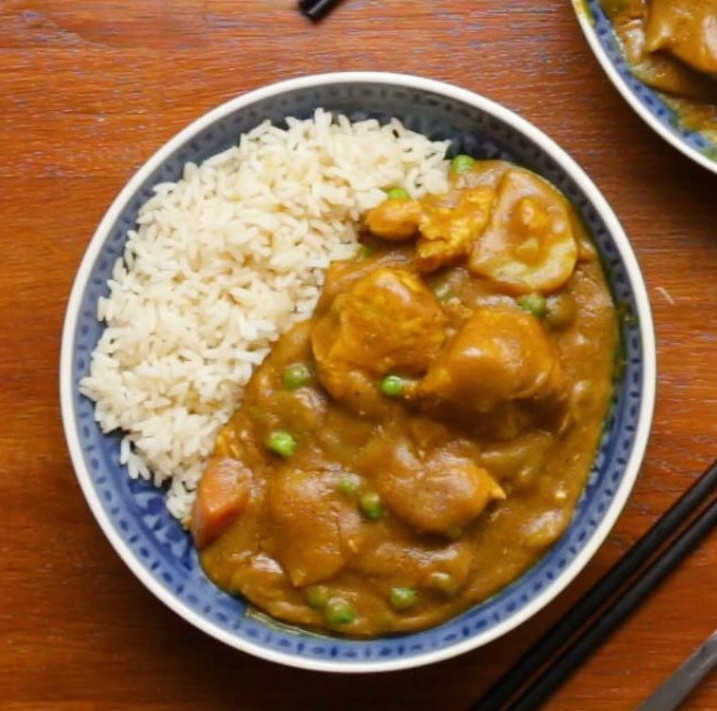
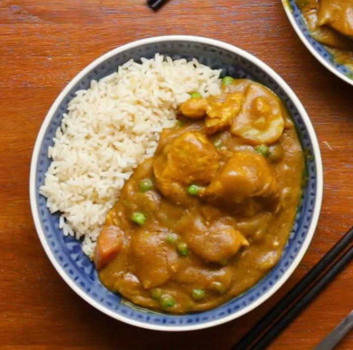

Chinese Curry Rice (Take-out Style)
This quick Chinese takeout-style chicken curry is so easy to make, but that small investment in time yields big rewards—an incredibly flavorful curry stir-fry with lots of tasty sauce!
Chicken curry was one of the dishes that I always looked forward to on any trip to Chinatown, and it’s actually incredibly easy to make. You only need a handful of ingredients, many of which you probably already have in your pantry or refrigerator, and it takes 15 minutes flat to prepare.
Just make sure to wear an apron or a black t-shirt, and use metal (as opposed to wood or bamboo) utensils to stir-fry this chicken curry dish. The turmeric and curry powder can leave stains. But of course, the risk is totally worth it.
Ingredients:
- 12 oz. boneless skinless chicken breast (340g, thinly sliced)
- Vegetable oil
- 1 teaspoon light soy sauce
- 2 teaspoons cornstarch (divided)
- 1 medium onion (halved and sliced into small wedges)
- 1 ½ cups chicken stock (355 ml)
- 4 teaspoons curry powder
- 1 teaspoon turmeric
- 1/2 teaspoon sugar
- salt
- Optional: Peas, carrots, potato
Steps:
- In a medium bowl, combine the sliced chicken breast, 1 teaspoon vegetable oil, 1 teaspoon soy sauce, and 1 teaspoon cornstarch.
- Heat your wok over high heat until smoking. Add a couple tablespoons of oil, and then add the chicken to the pan in one layer. Stir-fry the chicken just until it turns opaque, and remove from the wok. Set aside.
- Add another tablespoon of oil to the wok, and add the onions. Stir-fry for one minute, then stir in the chicken stock, curry powder, turmeric, sugar, and salt to taste.
- Combine the remaining 1 teaspoon of cornstarch with 2 teaspoons of water and mix until the cornstarch is dissolved. Stir it into the curry and stock mixture, and simmer for 1 minute, until thickened. If the sauce isn’t thick enough, add more cornstarch slurry. If it’s too thick, add more chicken stock.
- Add the cooked chicken back to the wok, and stir for another 30 seconds. Serve with steamed rice.